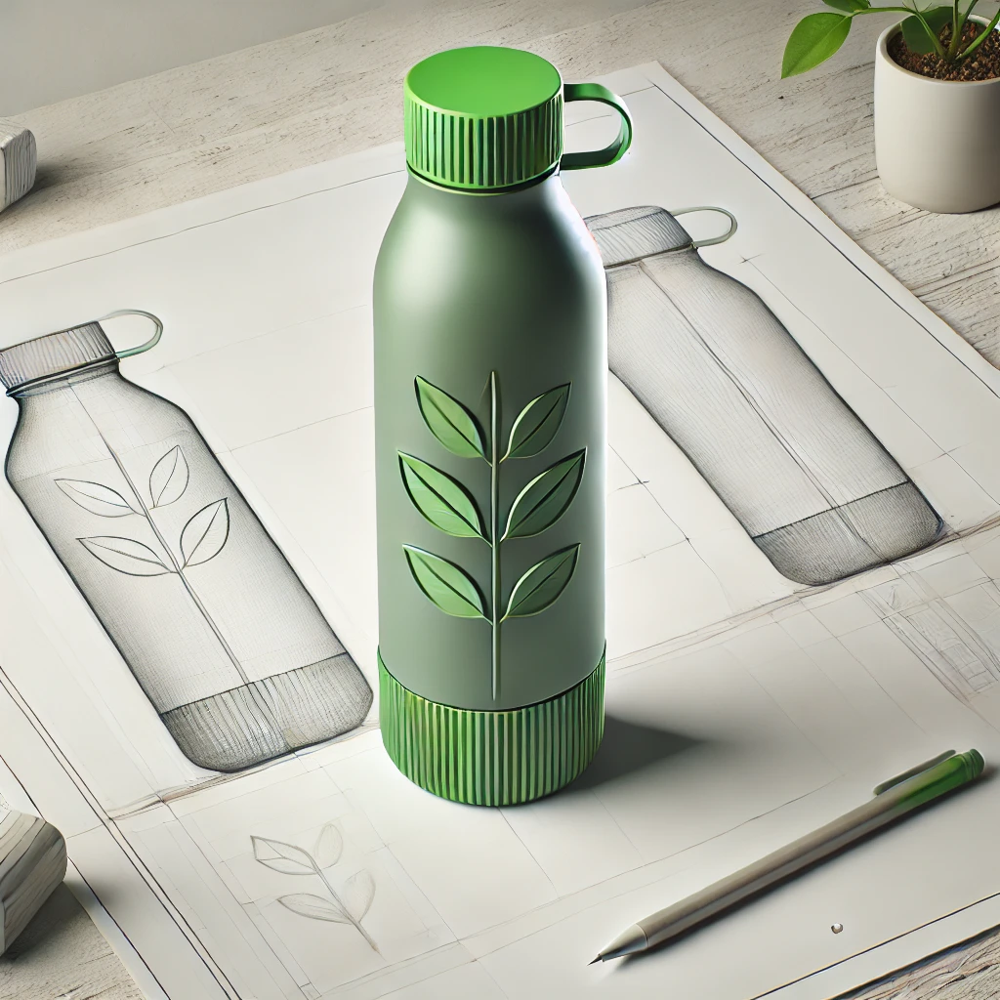
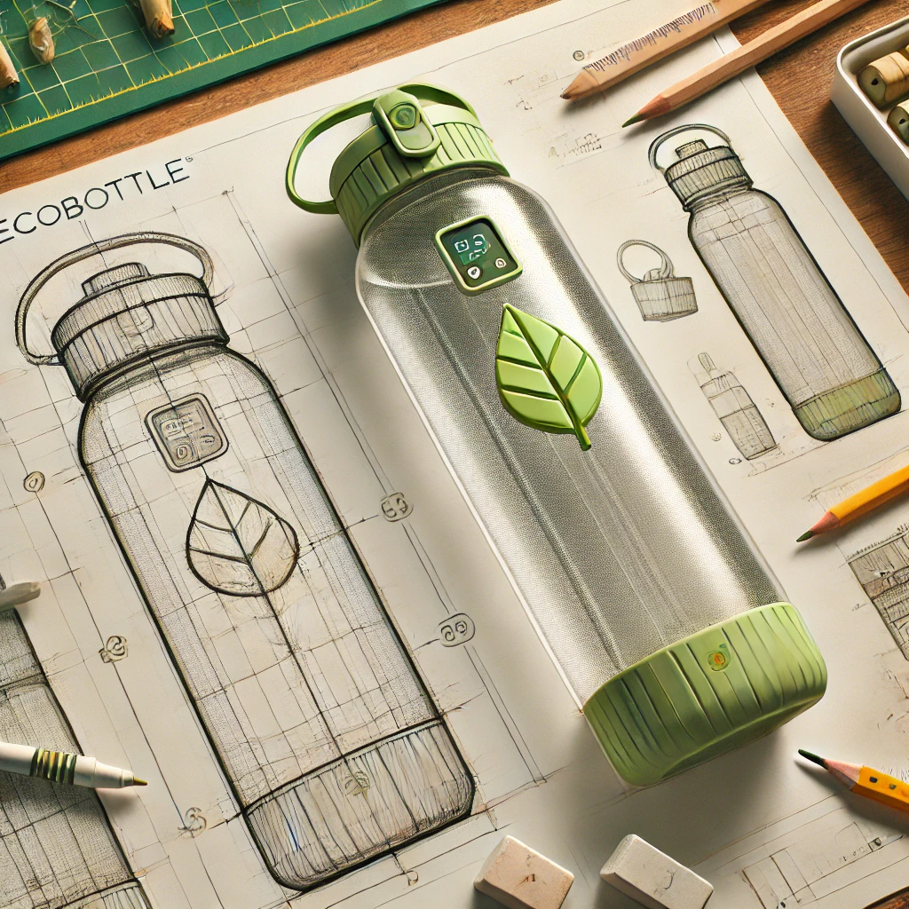
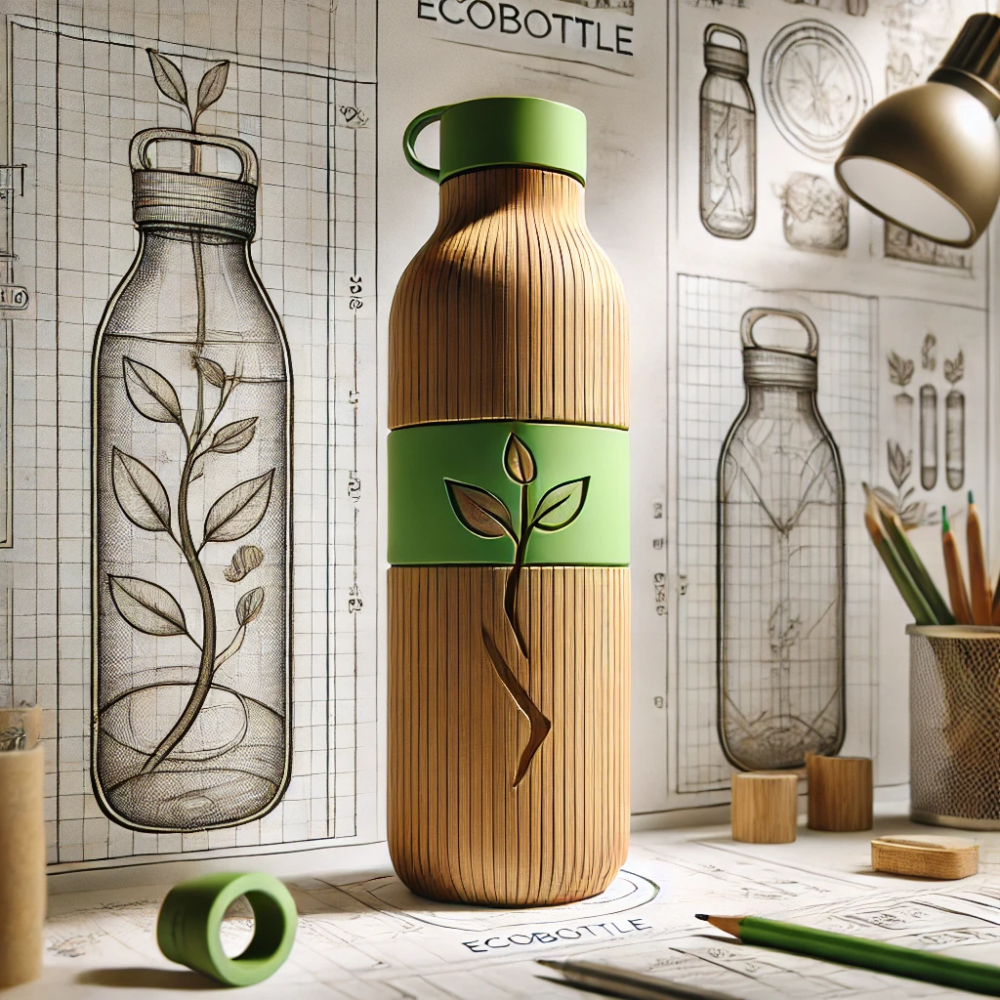

About the Product
EcoBottle is a lightweight, durable, and fully recyclable water bottle designed for eco-conscious individuals. Made from plant-based biodegradable materials, EcoBottle promotes a zero-waste lifestyle, ensuring that sustainability is within everyone's reach.
Key Features
- Biodegradable Materials: Made from plant-based plastics (PLA), ensuring it decomposes naturally after use.
- Modular Design: Bottle cap and body are replaceable independently to extend the product's life.
- Easy Cleaning: Smooth inner surface reduces water waste while cleaning.
- Reusable Packaging: Comes in a compostable pouch that doubles as a shopping bag.
- Customizable: Available in multiple colors and sizes (500ml, 750ml, 1L).
- Affordable: Designed to suit the budget of students, office-goers, and families.
Meet the Team
- Pranav Darbastwar
- Tanmay Agrawal
- Viraj Lahoti
- Nirav Bagadia
Class: 10th B
Lifecycle Process
EcoBottle follows a circular lifecycle to ensure minimal environmental impact:
- Procurement: Materials sourced from renewable agricultural products like corn starch.
- Production: Manufactured in energy-efficient facilities powered by solar energy.
- Packaging: Packed in compostable pouches to eliminate plastic waste.
- Consumption: Durable for daily use with minimal wear and tear.
- Recycling: After the lifecycle, bottles can be shredded into compostable material.
Product Gallery
Concept sketches and prototype images:


